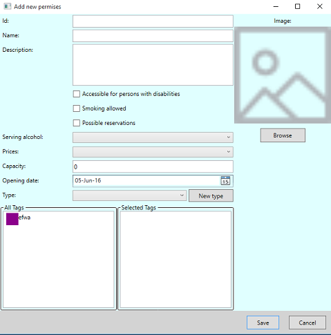

Add new premises
On this dialog you can see form for adding new premises to list of previously entered ones.
Text fields you need to fill are:
- "Id" for your premises, which must be unique for each premises. Tthis is the only time you can enter it, so be careful not to make mistake.
- "Name" for your premises.
- "Desctiption" for your premises.
- "Capacity" for your premises.
- "Opening date" for your premises. Also, you can choose appropriate date from calendar in the right corner of fild.
- "Type" for your premises. You can also add new type by pressing on button "Add new type" if there is no appropriate one.
Boxes you need to check are:
- "Accessible for disabled persons" if this possibility is available in/at your premises.
- "Smoking allowed" if this possibility is alowed in/at your premises.
- "Possible reservations" if this possibility is alowed in/at your premises.
Once, when you finish filling form, you can select appropriate tags for new premises by dragging it from "All tags" panel to "Selected tags" panel and dropping it.
You can also browse picture for your premises from file system by pressing on button "Browse". If you do not choose the specific picture for new
premises it will inherit the picture from its type by default.
Click on button "Save" is saving your new premises to list, unlike the click on button "Cancel", which turns you on previous conditions without saving.
